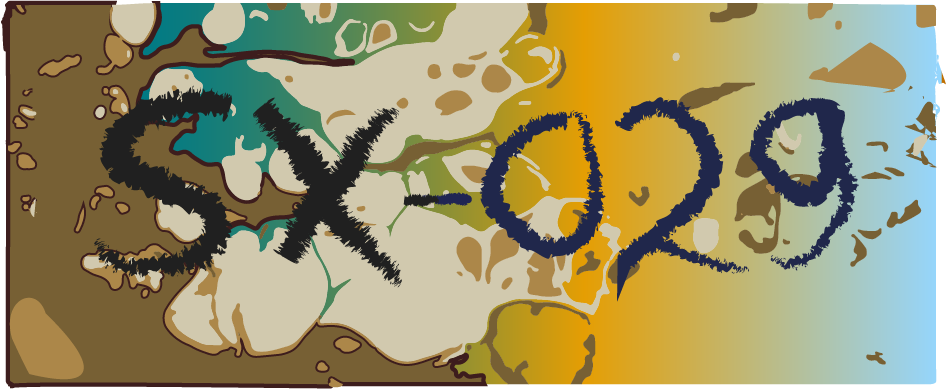

2073 год, весна. В секретных лабораториях министерства обороны РШИ (Разъединенных Штатов Израиля) полным ходом ведутся разработки системных решений по расширению и изменению личностных качеств, путем модификации функций мозга и памяти. Правительственные ведомства осведомлены о многочисленных проектах в этой сфере среди частных предприятий, контролируя передовые процессы и регулируя взаимодействия. Новейшие разработки не доступны обществу, но уже налажен оборот различных нейрочипов и имплантов связанных с глобальной сетью.
Враждующие между собой транснациональные корпорации пытаются выкупить лучших агентов и хакеров, чтобы остаться на коне в этой гонке, и в самый критический момент - нанести сокрушительный удар оппонентам.
Иногда в этих противостояниях находятся и те, кто по тем или иным причинам не желает выбирать чью либо сторону.
Международный конгломерат UNERO (от англ. «United Neurocybernetics Educational & Research Organization») изначально занимался изучением метаболизма мозга и эмуляцией происходящих на этом уровне процессов. Совмещая новые наноматериалы из композитов углерода, появилась возможность создавать более чувствительные импланты, а также существенно повысить качество медицинских услуг. В проектах кроме этого велись исследования и моделирование искусственных нервных тканей, для создания интеллектуальных машин на основе нуклеиновых кислот.
Этой весной в сводках внутренней разведки UNERO, появилась информация о неизвестном взломщике, который сумел проникнуть в святую область корпоративного тела и похитить базу данных секретных разработок. Агенты безопасности подключили спецотделы и ИИ детективов, вычислив местонахождение и личность хакера. Следующий этап подразумевал скорейшую реакцию, - любое промедление могло оказаться непростительным риском.
Утро 9-го марта.
Борис был статный мужчина лет пятидесяти, с легкой залысиной, густыми черными бровями и острым греческим носом. Много говорить не любил, отличаясь спокойным и твердым характером, способным выносить порою резкие, но всегда тщательно взвешенные суждения и быстро принимать решения в сложных ситуациях. Собственно, как и полагается заместителю начальника разведывательного аппарата в большой кампании. Но в сложившейся накануне ситуации, даже он не мог скрыть проскальзывающее по всему телу волнение. На лбу его уже начинал скапливаться пот. Он очень напряженно думал, понимая как быстро идет время.
© - G. Chatzky
Last Updated: - Текущее тысячелетие